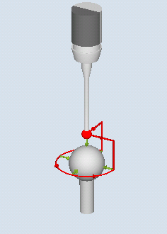
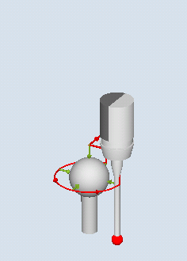

Mit dieser Messvariante wird an einer Kalibrierkugel die Winkligkeit (Parallelität) einer Spindel zur Werkzeugmaschine gemessen. Die Messung erfolgt durch Kombination der Messvarianten "Kugel" (CYCLE997) und "Kreissegment außen" (CYCLE979).
Anhand der gemessenen Werte wird die Winkelabweichung der Spindel zu den Achsen der Ebene berechnet.
Mit den gemessenen Winkelabweichungen kann die Spindel parallel zur Werkzeugachse mechanisch ausgerichtet werden oder die entsprechenden Tabellen zur Durchhangkompensation können aktualisiert werden.
Bei vorhandenen Rundachsen können die ermittelten Winkelangaben zum Ausrichten der Rundachse verwendet werden. Dazu müssen die Ergebnisparameter (_OVR) des CYCLE995 verwendet werden.
Die 1. Messung der Kalibrierkugel erfolgt mit CYCLE997 und Messwiederholung. Der Startwinkel ist frei wählbar. Der Fortschaltwinkel zwischen den Messpunkten ist auf 90 Grad eingestellt. Aus 2 Messpunkten am Umfang und einem Messpunkt am "Nordpol" der Kugel (höchster Punkt) wird der Mittelpunkt (Lage der Kugel) bestimmt. Zusätzlich kann der Durchmesser der Kalibrierkugel ermittelt werden.
Die 2. Messung erfolgt mit CYCLE979 am Schaft des Messtasters im Abstand von DZ. Der Startwinkel und der Fortschaltwinkel werden von der 1. Messung übernommen. Der Messweg und der Vertrauensbereich werden mal Faktor 1.5 ebenfalls von der 1. Messung übernommen. Es wird der Mittelpunkt des Messtaster-Schaftes in der Ebene ermittelt.
Bei beiden Messungen wird die Schaltrichtung des Messtasters bei jeder Einzelmessung nachgeführt.
Die Winkelabweichung in XY wird aus den Ergebnissen der beiden Mittelpunkte in XY und dem Abstand der beiden Messungen in Z (bei G17) berechnet.
Optional werden die Toleranzparameter der Winkelwerte überprüft (Maßtoleranz "ja").
Anmerkung:
Der Zyklus CYCLE995 beruht auf der Renishaw AxiSet TM Methode basierend auf der Patentanmeldung WO 2007068912 A1.
Es wird empfohlen, Messtaster mit höchster Genauigkeit der Fa. Renishaw für die Anwendung des CYCLE995 zu benutzen.
|  Messen: Winkelabweichung Spindel (CYCLE995), 1. Messung |  Messen: Winkelabweichung Spindel (CYCLE995), 2. Messung |
Die Genauigkeit der Kalibrierkugel sollte kleiner 0,001 mm sein.
In der Spindel ist ein elektronischer Messtaster mit einer möglichst langen Tastspitze (>100 mm) eingewechselt.
Der Messtaster-Schaft sollte eine gute Oberflächengüte besitzen (z. B. geschliffener Stahlschaft).
Der Messtaster muss vor Aufruf des Zyklus im Abstand des Messweges (DFA) über die montierte Kalibrierkugel (Nordpol) so positioniert werden, dass diese am Umfang (Äquator) kollisionsfrei angefahren werden kann.
Der Messtaster befindet sich nach dem Messzyklus auf der Startposition. In Messtasterrichtung (bei G17 Z) befindet sich der Messtaster im Abstand des Messweges (DFA) über dem Nordpol.